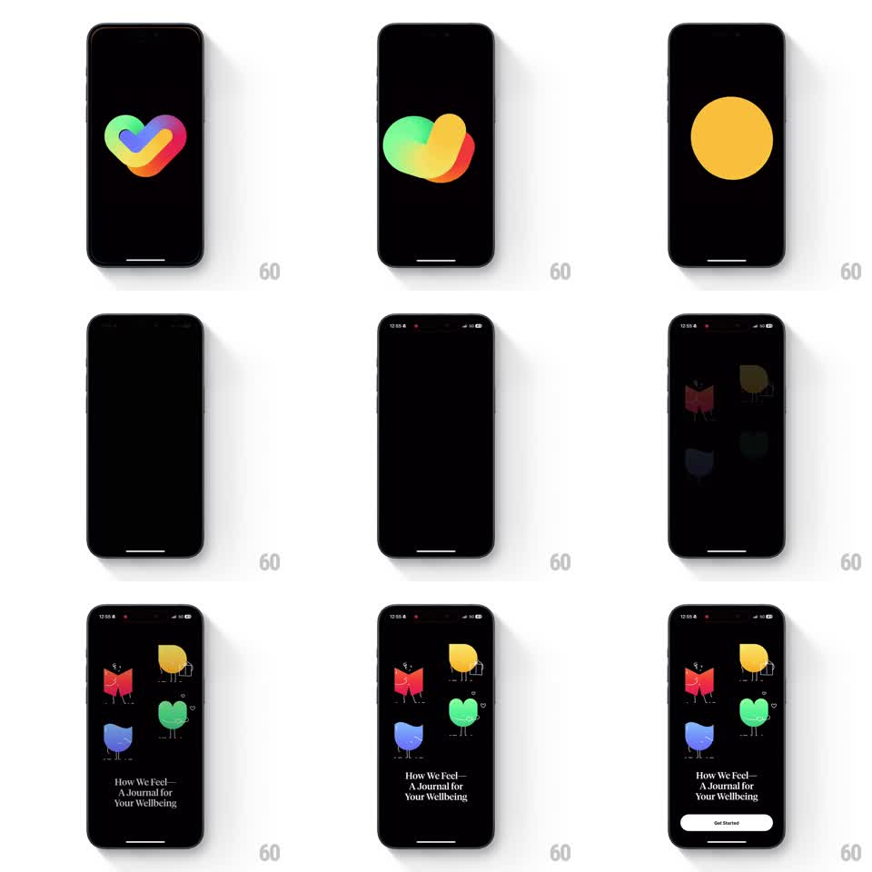

Media
Frame-by-frame

Rebuild this animation 1:1: How We Feel's splash - the rainbow heart logo morphs and condenses into a single yellow dot, the screen empties to black, then four mascot characters fade in one by one above the brand line and a Get Started button.

Rebuild this animation 1:1: How We Feel's splash - the rainbow heart logo morphs and condenses into a single yellow dot, the screen empties to black, then four mascot characters fade in one by one above the brand line and a Get Started button. ## Integration Integration: stack-agnostic spec - springs given as stiffness/damping, timed motions as duration + curve; map every value to your framework and animation library of choice. ## Scene Black screen. The rainbow interlocking-heart logo sits center. It blob-morphs (the heart's lobes slide and merge), condenses to a single yellow circle, and vanishes. Then the welcome layout builds: four mascots (red book character, yellow round character, blue character, green blob character) in a loose 2x2, the serif line "How We Feel - A Journal for Your Wellbeing", and a white Get Started button. ## Motion spec Pattern: logo morph-and-condense into a staggered welcome build. - The heart logo holds ~600ms, then its colored lobes slide and blend into each other (400ms, ease-in-out) - an organic wobble, not a geometric spin. - The merged blob shrinks into a single yellow circle (300ms, ease-in) which fades out (200ms). - Beat of pure black (~300ms). - The four mascots fade-and-rise in one at a time (each 300ms, opacity 0 to 1 + translateY 12px to 0, ~150ms apart, red first then yellow, blue, green). - The brand line fades in below them (250ms), then the Get Started button slides up (300ms, ease-out). ## Calibration - The black beat between logo and mascots is the palate cleanser; skipping it makes the transition muddy. - Mascot stagger order is fixed (red, yellow, blue, green) - it matches their visual weight. ## Reduced motion Logo crossfades to the fully-formed welcome screen over 400ms. ## Don't miss - The logo morph is a merge, not a rotation - the heart never spins. - Mascots are dim at first appearance in the video's middle frames; their fade-in is from near-black, not from transparent over a lit screen.